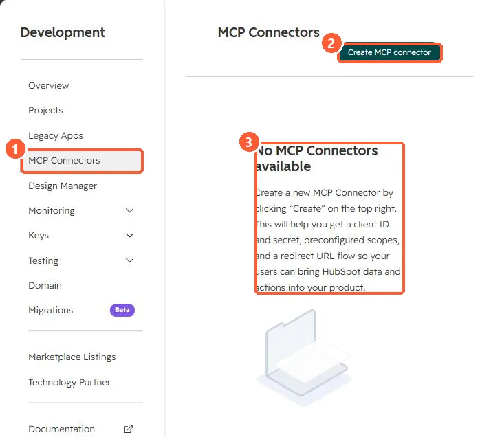

Short answer
HubSpot's developer docs say its connectors for Claude, ChatGPT, Microsoft Copilot and Gemini are built on the remote HubSpot MCP server, so users of those tools need no custom setup. The remote server is for builders adding HubSpot data to their own agents or AI tools. In Development > MCP Connectors, creating a connector gives you a client ID and secret, preconfigured scopes and a redirect URL flow.
1. The page
My demo portal has no MCP connectors yet.


2. Which path
- Using Claude, ChatGPT, Copilot or Gemini: built-in connector.
- Your own product or agent: an MCP connector on the remote server.
3. Related
Agent Hub context and API limits.